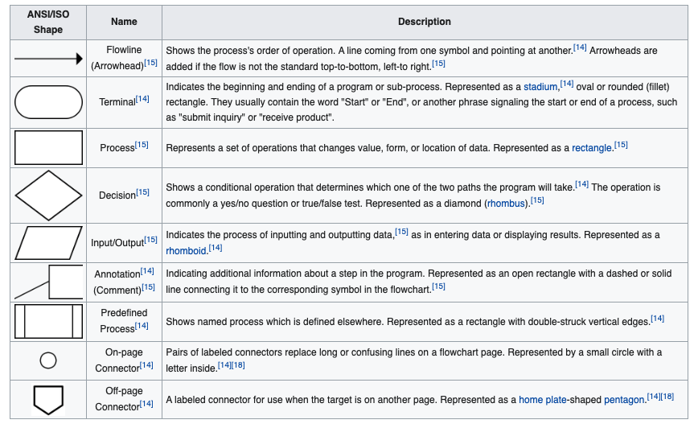

Algorithm Building Blocks
All programs are made up of three fundamental patterns of control or flow:
- Sequence - one instruction after another
- Selection (Conditional) - A group of instructions may or may not be executed, depending on some condition
- Repetition (Loop) – A group of instructions repeated multiple times
Sequential Structure
All programs are made up of combinations of these patterns (plus one more we’ll discuss later).
The simplest pattern, sequence, means that one computer instruction, or “line of code” is executed after another, in sequence. It is the default pattern.
%reset -f
x = 5
y = 10
x = x + y
print(x)
15
In a Jupyter notebook, the instructions in a cell are executed, following the pattern(s) in the code in that cell.
The code in cells form a continuous program, but the order depends on the order of the cells the user chooses to execute.
x = 5
y = 10
x = x + y
x = x*2
x + 4
34
Selection Structures
Selection is a pattern where the flow of execution branches one way or another, depending on a condition. The Python statements related to selection are if statements.
if statement
In the simple if statement, the body of the if statement (the indented instructions following the colon at the end of the if) is only executed if the condition evaluates to True. The statements following the if statement body that are indented at the same level as the if are always executed regardless of the value of the condition.
y = 2
x = int(input('Enter value for x (numeric)'))
if x < 10:
y = 20
y = y * 2
print(y)
Enter value for x (numeric) 9
40
if-else statement
When there are 2 possibilities, an if-else is used. The else clause (the statements indented after the else statement) are executed if the condition specified with the if is False. The else is never followed by a condition, just a colon. In the example above, the body of the if (y = 20) is executed if x < 10, and the body of the else (y = 2) is executed if x is not less than 10 (x >= 10).
x = int(input('Enter value for x (numeric)'))
if x < 10:
y = 20
else:
y = 2
y = y * 2
print(y)
Enter value for x (numeric) 9
40
if-elif-else statement
When there are multiple possibilities, the the if-elif-else statement is used. An if statement may have just one if and one else clause, but it may have multiple elif (else if) clauses. In the example, the else is executed only if x is greater than 10, because the cases of x less than 10 and x equal to 10 are already covered. Notice that the == operator is used to test for equality, because = is used for assignment. Each elif clause must have its own condition, followed by a colon.
x = int(input('Enter value for x (numeric)'))
if x < 10:
y = 20
elif x == 10:
y = 4
else:
y = 2
y = y * 2
print(y)
Enter value for x (numeric) 9
40
Repetition (Loop) Structures
Obviously, a powerful part of programming is that you can write a single piece of code, and execute it as many times as needed, from once to millions of times.
Python has two types of loop structures, the for loop and the while loop.
for loop
The for loop iterates (loops) over a set of values, and it is used along with the in keyword.
The simplest version iterates over a set of integers created using the range() function.
for index in range(3):
print( index )
0
1
2
In this case, range() produces the set of integers from 0 to 2, inclusive. Notice how the last value 3 is not returned by range(). This behavior is python specific, and range() returns values up to, but not including the stopping value - another way to interpret is start at 0 and produce 3 values, including the zero - the syntax below is more reflective of such thinking:
for index in range(0,3):
print( index )
0
1
2
while loop
The while loop iterates (loops) while some condition remains True. The condition is specified by a Boolean expression (True/False)
x = 0
y = 10
print(x,y)
while x < y:
x += 2
y -= 2
print(x,y)
0 10
6 4
The statements in the loop body are executed while the condition x < y remains True.
As with the for loop, the while loop statement ends in a colon, and the loop body is indented (and ends when the indentation level returns to the same level as the while.
A Boolean expression is any expression that evaluates to True or False. Expression that include the relational operators or the logical operators are Boolean expressions. Also, the integer value 0 is False and a non-zero value is True, and there are other special cases, for example, the empty string “” is False.
With while loops, the usefulness of the := (assignment that also evaluates) becomes clear.
while (str := input("Please enter a string or 'quit' to stop: ")) != 'quit':
print( "Your string's length is " )
print( len(str) )
Please enter a string or 'quit' to stop: what is my name
Your string's length is
15
Please enter a string or 'quit' to stop: quit
versus
str = input("Please enter a string or 'quit' to stop: ")
while str != 'quit':
print( "Your string's length is " )
print( len(str) )
str = input("Please enter a value or 'quit' to stop: ")
Please enter a string or 'quit' to stop: what is my name
Your string's length is
15
Please enter a value or 'quit' to stop: quit
A for loop can be considered a special case of a while loop, in the sense that a for loop continues while the end of the sequence of values has not been reached.
Flowcharts
What is a Flowchart?
A flowchart is a type of diagram that represents a workflow or process. A flowchart can also be defined as a diagrammatic representation of an algorithm, a step-by-step approach to solving a task.

| Figure 2 | Repair Flowchart for a Lamp | https://en.wikipedia.org/wiki/Flowchart |
|---|---|---|
The flowchart shows the steps as boxes of various kinds, and their order by connecting the boxes with arrows. This diagrammatic representation illustrates a solution model to a given problem. Flowcharts are used in analyzing, designing, documenting or managing a process or program in various fields.
There is a symbol convention (a language) as depicted in Figure 2 below (from: https://en.wikipedia.org/wiki/Flowchart)

| Figure 1 | Flowchart Symbols | https://en.wikipedia.org/wiki/Flowchart |
|---|---|---|
IBM engineers implemented programming flowcharts based upon Goldstine and von Neumann's unpublished report, "Planning and coding of problems for an electronic computing instrument, Part II, Volume 1" (1947), which is reproduced in von Neumann's collected works.
The flowchart became a popular tool for describing computer algorithms, but its popularity decreased in the 1970s, when interactive computer terminals and third-generation programming languages became common tools for computer programming, since algorithms can be expressed more concisely as source code in such languages. Often pseudo-code is used, which uses the common idioms of such languages without strictly adhering to the details of a particular one.
Nowadays flowcharts are still used for describing computer algorithms.[9] Modern techniques such as UML activity diagrams and Drakon-charts can be considered to be extensions of the flowchart.
Nearly all flowcharts focus on on some kind of control, rather than on the particular flow itself! While quaint today, they are an effective way to document processes in a program and visualize structures. We recomend you get in the habit of making rudimentary flowcharts, at least at the supervisory level (the sandwich chart above)
How are they useful?
(paraphrased from https://www.breezetree.com/articles/top-reasons-to-flowchart)
Sometimes it's more effective to visualize something graphically that it is to describe it with words. That is the essence of what flowcharts do for you. Flowcharts explain a process clearly through symbols and text. Moreover, flowcharts give you the gist of the process flow in a single glance. The following are some of the more salient reasons to use flowcharts.
Process Documentation / Training Materials Another common use for flowcharts is to create process documentation. Although this reason overlaps with regulatory and quality management requirements (below), many non-regulated businesses use flowcharts for their documentation as well. These can range in form from high-level procedures to low-level, detailed work instructions.
You may think that this applies mainly to large organizations, but small companies can greatly benefit from flowcharting their processes as well. Small enterprises need to be nimble and organized. Standardizing their processes is a great way to achieve this. In fact, the popular entrepreneurial book The E-Myth Revisited: Why Most Small Businesses Don't Work and What to Do About It by Michael Gerber is based on the fact that small businesses are more likely to succeed if they treat their operations like a franchise. in a nutshell, this means standardizing and documenting their business processes. There's no better way to do that than with flowcharts, right?
Training materials are often created using flowcharts because they're visually stimulating and easy to understand. A nicely laid out flowchart will gain and hold the reader's attention when a block of text will often fail.
Workflow Management and Continuous Improvement Workflows don't manage themselves. To ensure that you are meeting your customers' needs, you need to take control of your business processes. The first step to workflow management is to define the current state of your processes by creating an "As-Is Flowchart". That allows you to analyze your processes for waste and inefficiency. After you have identified areas for process improvement, you can then craft new flowcharts to document the leaner processes.
Programming Information technology played a big influence on the use and spread of flowcharts in the 20th century. While Dr. W. Edwards Deming was advocating their use in quality management, professionals in the data processing world were using them to flesh out their programming logic. Flowcharts were a mainstay of procedural programming, however, and with the advent of object oriented programming and various modeling tools, the use of flowcharts for programming is no longer as commonplace as it once was.
That said, even with in the scope of object oriented programming, complex program logic can be modeled effectively using a flowchart. Moreover, diagramming the user's experience as they navigate through a program is a valuable prerequisite prior to designing the user interface. So flowcharts still have their place in the world of programming.
Troubleshooting Guides Most of us have come across a troubleshooting flowchart at one time or another. These are usually in the form of Decision Trees that progressively narrow the range of possible solutions based on a series of criteria. The effectiveness of these types of flowcharts depends on how neatly the range of problems and solutions can fit into a simple True/False diagnosis model. A well done troubleshooting flowcharts can cut the problem solving time greatly.
Regulatory and Quality Management Requirements Your business processes may be subject to regulatory requirements such as Sarbanes-Oxley (SOX), which requires that your accounting procedures be clearly defined and documented. An easy way to do this is to create accounting flowcharts for all your accounting processes.
Similarly, many organizations fall under certification requirements for quality management systems - such as ISO 9000, TS 16949, or one of the many others. In such environments, flowcharts are not only useful but in certain clauses they are actually mandated.
Psuedocode
Define
Readings
-
Learn Python in One Day and Learn It Well. Python for Beginners with Hands-on Project. (Learn Coding Fast with Hands-On Project Book -- Kindle Edition by LCF Publishing (Author), Jamie Chan https://www.amazon.com/Python-2nd-Beginners-Hands-Project-ebook/dp/B071Z2Q6TQ/ref=sr_1_3?dchild=1&keywords=learn+python+in+a+day&qid=1611108340&sr=8-3
-
Learn Python the Hard Way (Online Book) (https://learnpythonthehardway.org/book/) Recommended for beginners who want a complete course in programming with Python.
-
How to Learn Python for Data Science, The Self-Starter Way (https://elitedatascience.com/learn-python-for-data-science)
-
Flowcharts (QA/QC Perspective) https://asq.org/quality-resources/flowchart
-
Flowcharts - Wikipedia https://en.wikipedia.org/wiki/Flowchart
-
Psuedocode - Wikipedia https://en.wikipedia.org/wiki/Pseudocode